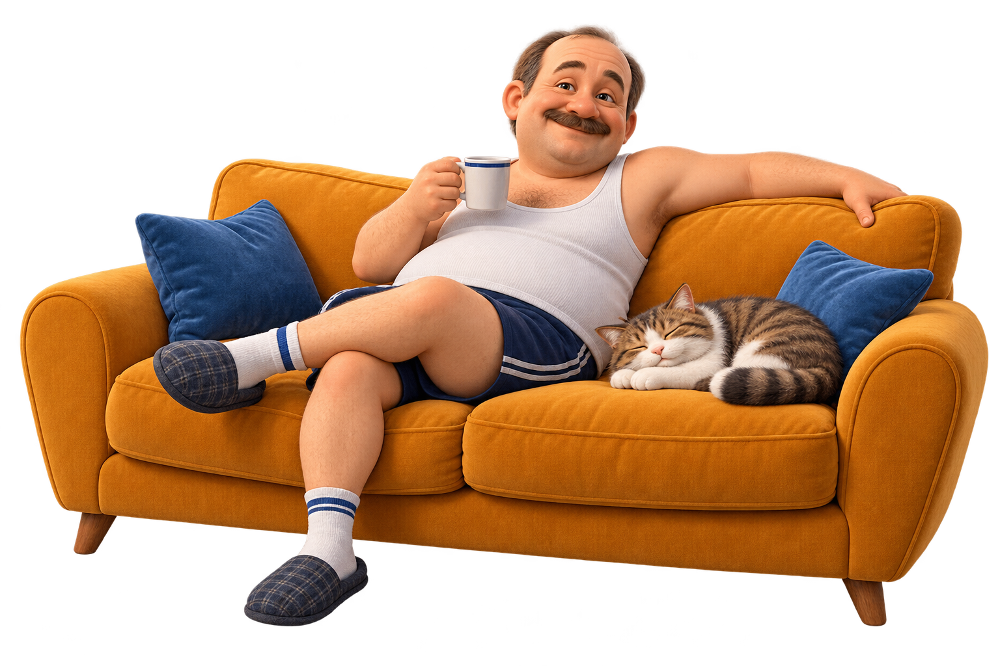

ДЛЯ ТЕХ, КТО УЖЕ ВСЁ ПОНЯЛ
Взрослая жизнь. На расслабоне.
Ваш комфорт —
наша главная забота
Дела подождут.
Скуфство — нет.
Оформляйте важное, получайте положенное.
Тапочки снимать не обязательно.

РОБОТ ПАЛЫЧ
Помогу порешать. Не вставая с дивана.
Всё для своих
Популярные услуги
Вести с дивана
Всё важное. Ничего срочного.Есть вопросики?
Сейчас всё объяснимКто вообще может стать скуфом?
Любой, кто ценит комфорт, умеет отдыхать и хоть раз говорил «дома лучше». Возраст, пол и наличие гаража значения не имеют. Пройдите тест — диванная комиссия разберётся.
Здесь правда можно получить документы?
Можно получить шуточное удостоверение скуфа и подать мемное заявление. Скуфуслуги — развлекательный проект. Наши документы имеют исключительно диванную силу.
Сколько стоят услуги?
Ноль рублей и немного вашего свободного времени. Все услуги бесплатные. Чай, печеньки и носки с сандалиями приобретаются по желанию.
Где хранятся мои заявления?
В этом браузере, на вашем устройстве. После подачи они появятся в разделе «Заявления». При очистке данных браузера история исчезнет. Настоящие паспортные данные нам не нужны — достаточно имени или прозвища.